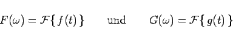

Inhalt Index DeskTop Bronstein

 Integraltransformationen Fourier-Transformation Eigenschaften der Fourier-Transformation
Integraltransformationen Fourier-Transformation Eigenschaften der Fourier-Transformation


Wie bei der LAPLACE-Transformation bereits bemerkt, versteht man unter Rechenregeln im Zusammenhang mit Integraltransformationen die Abbildung gewisser Operationen im Originalbereich auf andere Operationen im Bildbereich. Wenn vorausgesetzt wird, daß die beiden Funktionen f(t) und g(t) im Intervall  absolut integrierbar sind und ihre FOURIER-Transformierten
absolut integrierbar sind und ihre FOURIER-Transformierten
|  | (15.83) |